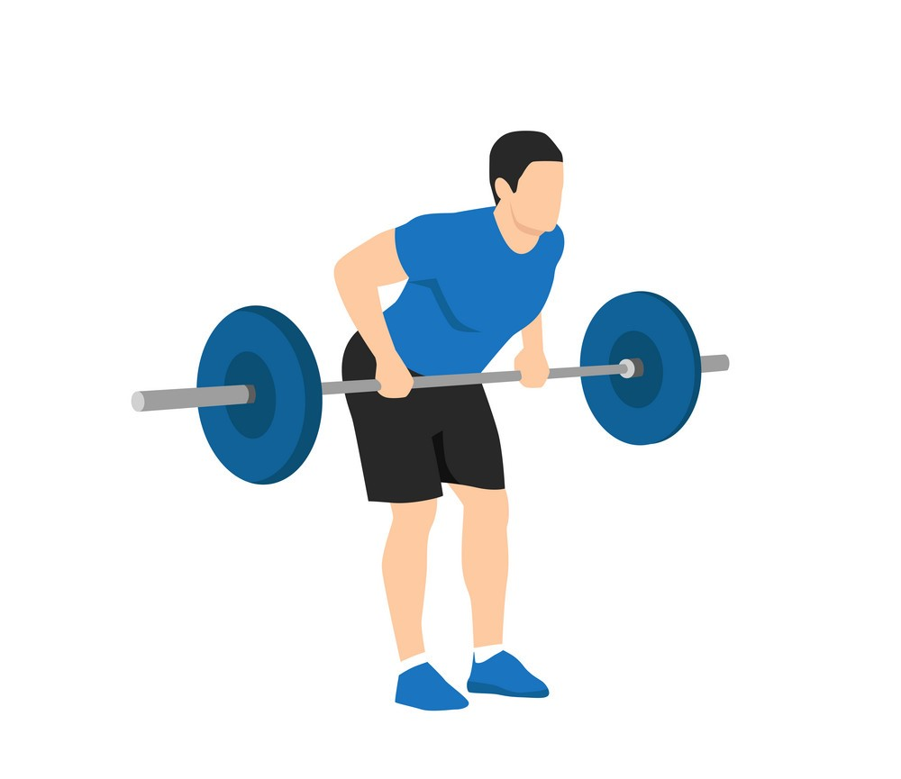

Exercise Description
Attach chains to a barbell and load it with weight. Bend at the hips with a slight knee bend, keeping your back flat. Pull the barbell towards your lower rib cage, then lower it slowly, letting the chains add variable resistance.
Reps and Sets
Beginners: 3 sets of 10-12 reps
Weights: 15-20kg + 10kg chains
Rest time between each set: 2min
Video Implementation